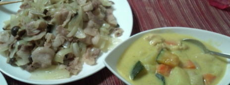
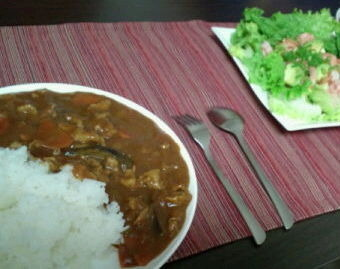

| 2011/12 28 Wed | 橋本奈々未 (´_ゝ｀) きらきら |
どうもこんばんは！ななみです！
すっかり年末モードですね！
私は最近何日なのか何曜日なのか
分からなくなってきました＼(^o^)／
この前乃木坂ってどこ？で
私ロールキャベツ作ったじゃないですか。
実は私
ロールキャベツあんま食べれないんです(+_+)
つくねとかすり身とかが苦手でね…
もちろん作るのも初めて。
適当に作ったら
なんとか形にはなったけど
ロールキャベツって
キャベツ茹でてから巻くんですね！
悔しい…よりによってロールキャベツ…
あれが私の実力だとは思われたくない！(・_・)
ということで ペイッッ

ペイッッ

１枚目は
お母さんに教えてもらった
例の豚と玉ねぎときのこの炒めもの♪
と かぼちゃ入りシチュー(*^.^*)
２枚目は
夏野菜カレーと
アボカドシュリンプサラダ(*^.^*)
時間とお金かけないように
簡単なものしか作ってないけど
私料理は普通にできるんだよー(´・ω・｀)
まぁ、可もなく不可もなくな
微妙な写メしかないのが
悔やまれますがね…
それが私 あぁ、無情
はいっ質問答えます(*⌒▽⌒*)
◎好きなキャラクターは？
└あんまり詳しくないんだけど
スヌーピーがかわいいと思う♪
◎北海道で行ったことない場所は？
└行ったことないとこの方が多いよ〜(>_<)
札幌と小樽と登別と留萌以外
学校行事でしか行ってないさ(;_;)
◎上京して変わったことは？
└１人で起きれるようになった！
あとは生活力がついた(o^_^o)笑
◎春夏秋冬どの季節がすき？
└ぜんぶすきー！
でも一番幸せな気持ちになるのは
春だな〜(@^O^@)
雪が溶けてコンクリートが見えたときの
あの高まりε=ヾ(*~▽~)ノ
◎また北海道でイベントする？
└私的には是非させて頂きたいです！
どうなるかはまだ分かりませんが
道民としては期待してます(*^^*)
◎朝ご飯はパン派？ご飯派？
└時期によって
体が求めるものが違うなぁ(´・ω・｀)
今はたまご派かも！笑
◎コレクションしてるものはある？
└やっぱりお風呂グッズかな〜♪
気付いたら増えてる(´・ω・｀)♪笑
あとはね〜、ビレバンにあるような
面白可愛い雑貨とかヾ(^▽^)ノ
◎他のメンバーに負けないことは？
└ん〜、なんだろ…
プレッシャー感じやすいとこ？笑
あとはバスケの大好きさ！
健康に関しての知識！
体調管理風邪予防の徹底さ！
気抜いたらすぐ体調崩しちゃうのさ(;_;)
◎ななみんを一言で表すと？
└白紙！
これから色んなものを吸収して
いつか色紙になるε=┌( ・_・)┘笑
◎センターとキャプテン、
するとしたらどっち？
└めっちゃ難しい質問きたー(;_;)笑
私はどちらにおいても
それをサポートする側が一番
適役なのではと自負しています(つд｀)
強いて言えば
年齢的にキャプテンですかね(>_<)
はいっ今日はここまで(o^_^o)
今は移動中です〜っ
ではみなさん今日もお疲れ様でした！
明日もがんばりましょう(*⌒▽⌒*)